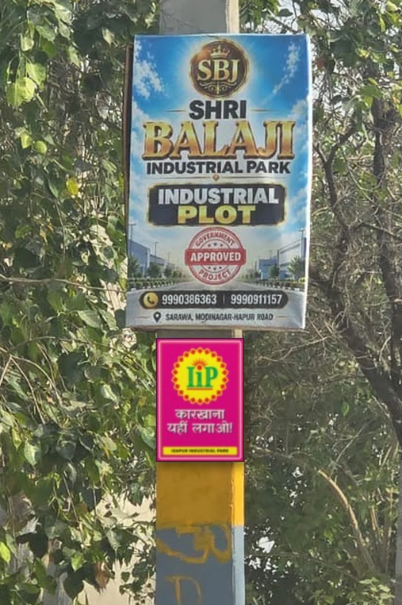
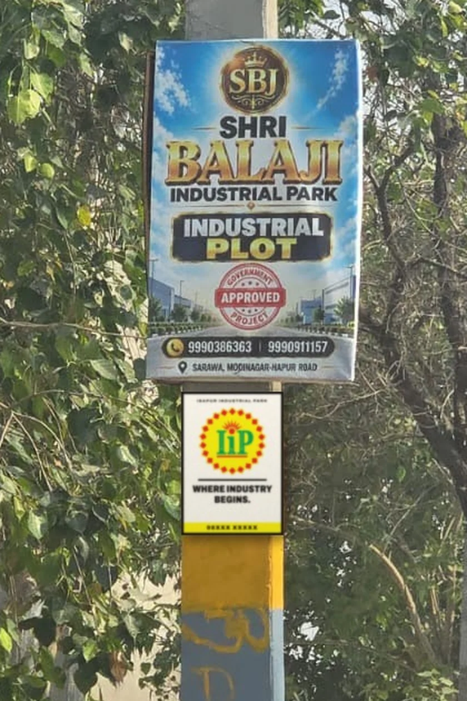

Direction 01
Jamun
Own the colour nobody on the road owns.

Direction 02
Gulaal
Talk the way the highway talks.

Direction 03
Kora
Be the quiet board on the loudest pole.
Scorecard
| Criterion | Jamun | Gulaal | Kora |
|---|---|---|---|
| Stands out from the competitor boards Measured colour distance, plus how different the layout is from a crowded board. | 5/5 | 5/5 | 4/5 |
| Not lost in greenery Ivory leans on its frame; violet and pink have no equal in the fields. | 5/5 | 5/5 | 4/5 |
| Legible at speed (colour and logo first) Pink with cream text is the weakest contrast at 4.2:1. | 5/5 | 4/5 | 5/5 |
| Fit with the logo's own colours Violet makes the yellow glow; pink and the red diamonds are close cousins. | 5/5 | 4/5 | 4/5 |
| Trust with investors and the board Premium and serious versus playful. | 4/5 | 3/5 | 5/5 |
| Cost to extend across touchpoints Kora works in one colour; Gulaal needs more colour passes. | 4/5 | 4/5 | 5/5 |
| Memorability and shareability Gulaal's lines get repeated; Kora wins by restraint. | 4/5 | 5/5 | 3/5 |
| Total | 32/35 | 30/35 | 30/35 |
Scores are our judgement from the measurements on each kit page. Change the weights if the board values something differently.